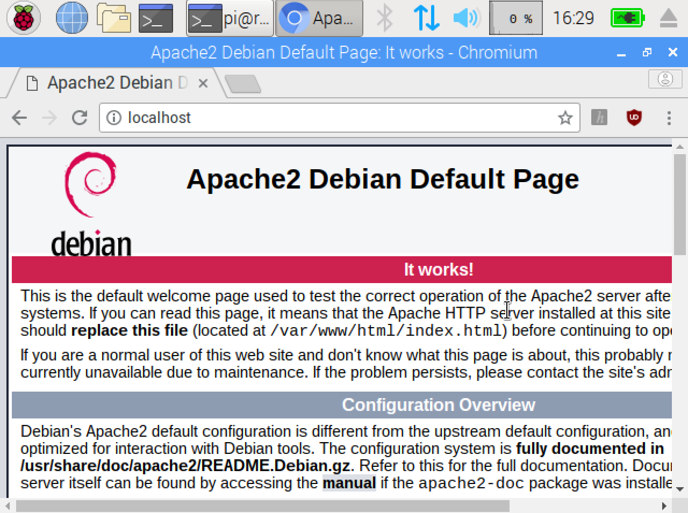
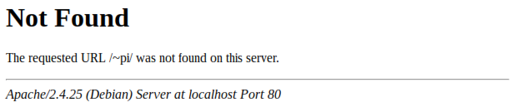
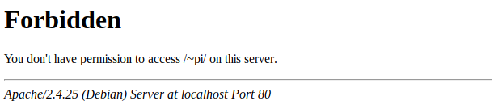
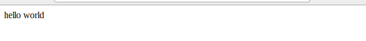

Raspberry Piのセットアップ
Contents
Raspberry Piのセットアップ¶
各種ソフトウェアのインストールと設定¶
第二部以降で必要になるソフトウェアをインストールします．
実験で利用するソフトウェアのインストール¶
第二部以降で必要になるソフトウェアは，Webサーバ，データベースサーバ，サーバサイドプログラミング言語処理系，サーバサイドプログラミング言語処理系からデータベースにアクセスするためのライブラリです．
Raspbien では，これらのソフトウェアを apt を使ってインストールします．
$ sudo apt install apache2 apache2-doc apache2-utils <--- WEBサーバーのインストール
$ sudo apt install php7.3 php7.3-mysql apache2-mod-php7.3 <--- PHPのインストール
$ sudo apt install mariadb-server mariadb-client <--- DBのインストール
PCとRaspiを有線で直接接続している場合，RaspiはPCとは接続されていますが，インターネットに接続されていません． 色々と方法はありますが，以下，いくつかある手順で可能なものを試して実行しましょう．
家にWiFiがある場合（かんたん）
RasPiのWiFiをONにする
上記コマンドで必要なソフトウェアをインストール
インストールが終わったら必ずまたWiFiをOFFにしておきましょう（実験時のトラブルの元になります）
モニタ・キーボード等がある場合
家のルータなどに有線LANで接続，モニタ・キーボードをRaspiに接続し起動（RasPi起動前に機器を接続しておいてください）
RaspiのIP設定を固定IPからDHCPへ変更する
インストール
RaspiのIP設定をDHCPから固定IPへ戻してから，有線LANをルータから抜いて再度ノートPCと接続
RasPiの固定IP設定をDHCP設定へ変更する方法（再度，固定IPに戻す際はコメントアウトを外して以下実行）
$ sudo vi /etc/dhcpcd.conf <---- viエディタでなくてもOK
最下部辺りの以下の行に移動して「i」押してコマンドモードから入力モードに切り替えて以下のように２行コメントアウト
#interface eth0
#static ip_address=192.168.1.101/24
もし以下（static ....という固定IP設定の行）も存在する場合は，それらもすべてコメントアウト
#static routers=xxx.xxx.xxx.xxx
#static domain_name_servers=xxx.xxx.xxx.xxx
「Esc」押して入力モードからコマンドモードに戻ってから「:wq!」と入力してEnter押して強制保存しviエディタから抜ける
$ sudo systemctl restart dhcpcd
$ sudo systemctl restart networking
$ ip a <---- DHCPでIPアドレス割り振られているか確認し，Raspi上のWebブラウザでホームページ等も閲覧できればOK
どちらも無理な場合
PCでインストール用パッケージをダウンロード（パッケージは https://packages.debian.org/buster/ などから探せます）
SCPでパッケージを転送
dpkgコマンドでインストール
ファイアーウォールの設定¶
ファイアウォールは ufw を利用して設定します．新たに Webサーバをインストールしましたので，Webサーバが利用するポート80に対して外部からアクセスできるよう設定しておきます．
$ sudo ufw allow 80/tcp
以下のコマンドを利用して，ポート開放のための設定を行ってください（最後のソフトウェアのアップデートは時間を要しますので時間のある時に実施してください）．
$ sudo apt install ufw
$ sudo ufw disable
$ sudo ufw default deny
$ sudo ufw allow 22/tcp
$ sudo ufw allow 80/tcp
$ sudo ufw allow 5210/tcp
$ sudo ufw allow 5900/tcp
$ sudo ufw allow 11111/tcp
$ sudo ufw enable
$ sudo apt update
$ sudo apt -y upgrade
$ sudo reboot
$ sudo ufw status
Status: active
To Action From
-- ------ ----
22/tcp ALLOW Anywhere
80/tcp ALLOW Anywhere
5201/tcp ALLOW Anywhere
5900/tcp ALLOW Anywhere
11111/tcp ALLOW Anywhere
22/tcp (v6) ALLOW Anywhere (v6)
80/tcp (v6) ALLOW Anywhere (v6)
5201/tcp (v6) ALLOW Anywhere (v6)
5900/tcp (v6) ALLOW Anywhere (v6)
11111/tcp (v6) ALLOW Anywhere (v6)
（補足）IPv6を使用しない場合は /etc/default/ufw 内で IPV6=no とすると無効にすることができます
Webサーバ(Apache)の設定¶
自動起動の設定¶
それではいよいよWebサーバを設定します．既にWebサーバ(Apache)は上記の手順でインストールしていますので，RasPi起動時に自動的にWebサーバが起動（enable）するよう設定しつつ，Webサーバを起動（start）してみます．
$ sudo systemctl enable apache2.service
$ sudo systemctl start apache2.service
それでは，Webサーバが起動したことを確認します．左上の地球儀のようなアイコンからブラウザ（Chronium）を起動して， http://192.168.1.101 にアクセスしてみましょう（DHCP設定になっている人は，$ ip a 等でIPアドレスを確認して適宜読み替えてください）．以下のようにApache2 Debian Default Pageが表示されれば，Webサーバの起動は成功です．

アクセスができませんか？できない場合はWebサーバを起動させたRasPi側のファイアーウォールの設定や，学生PCのIPアドレスがWebサーバと通信可能なIPアドレス（同じネットワークアドレスで異なるIPアドレス）となっているかどうか等を確認してみましょう．
Apacheの初期設定¶
ユーザディレクトリの設定¶
ここまでで確認したApache2 Debian Default PageはWebサーバ全体のページです．Webサーバ上のディレクトリでは /var/www/htmlに対応します（ただし，Apache2 Debian Default Pageはちょっと特殊なページで，/var/www/html に index.html がない時に自動生成されて表示されるページです）．つまり，/var/www/html に置かれたファイルが http://192.168.1.101/ にアクセスした時に参照されることになります．
また，Webサーバは複数ユーザが利用することを想定し，各人が自分のWebページを作成できるように設定可能です．例えば，http://192.168.1.101/~ohkiにアクセスした時には，アカウント:ohki のコンテンツを参照できるということです． Apacheにはこれを実現するユーザディレクトリという機能があります．この機能は，http://サーバ名/~アカウント名 にアクセスした時にホームディレクトリのpublic_htmlのコンテンツを表示する機能です．具体例としては，http://192.168.1.101/~ohki にアクセスした時に/home/ohki/public_htmlのコンテンツを表示することになります．試しに，ユーザー名 pi のユーザーディレクトリ http://192.168.1.101/~pi/に設定前の状態でブラウザでアクセスしてみると，以下のようにコンテンツがない，というメッセージが表示されるはずです．

ユーザディレクトリの設定をする前に，少しApacheの設定ディレクトリ /etc/apache2 の中身をのぞいてみましょう．
$ ls /etc/apache2
apache2.conf conf-enabled magic mods-enabled sites-available
conf-available envvars mods-available ports.conf sites-enabled
xxx-available や xxx-enabled というディレクトリがあるのがわかりますか？ RasPiのRaspbian OSでは．Apache各設定ファイルのうち普段は利用しないファイルを「available」，現在利用するファイルを「enabled」というフォルダに置くことになっています．ここで，試しに mods-enabled の中身を見てみましょう．
$ ls -l /etc/apache2/mods-enabled/
total 0
lrwxrwxrwx 1 root root 36 Mar 11 15:37 access_compat.load -> ../mods-available/access_compat.load
lrwxrwxrwx 1 root root 28 Mar 11 15:37 alias.conf -> ../mods-available/alias.conf
lrwxrwxrwx 1 root root 28 Mar 11 15:37 alias.load -> ../mods-available/alias.load
...
＜中略＞
...
lrwxrwxrwx 1 root root 31 Mar 11 15:37 setenvif.conf -> ../mods-available/setenvif.conf
lrwxrwxrwx 1 root root 31 Mar 11 15:37 setenvif.load -> ../mods-available/setenvif.load
lrwxrwxrwx 1 root root 29 Mar 11 15:37 status.conf -> ../mods-available/status.conf
lrwxrwxrwx 1 root root 29 Mar 11 15:37 status.load -> ../mods-available/status.load
全て mods-available へのシンボリックリンクになっていることがわかりますね．つまり，それぞれの役割は
mods-available：モジュールを読み込むためのファイル，およびモジュールの設定ファイルの実体を配置
mods-enabled ：mods-availableのうち有効にするモジュールへのシンボリックリンクを配置
となります．このうち，シンボリックリンクを作成する作業についてはこれをサポートするコマンドa2enmod（シンボリックリンクを作成する）およびa2dismod（シンボリックリンクを削除する）がRaspbianには用意されていますのでこれを使いましょう．
本題のユーザーディレクトリに関しては既にuserdirというモジュールがmods-availableにインストールされています．上記のa2enmodコマンドを使って有効にしておきましょう．コマンド実行後は Apache の再起動をお忘れなく．
$ sudo a2enmod userdir
$ sudo systemctl restart apache2
それでは，再度ブラウザで http://192.168.1.101/~pi にアクセスしてみましょう．

表示が変わりましたか？Apacheのデフォルトの設定では /home/pi/public_html 以下にユーザのコンテンツを配置するようになっていますが，public_html が存在しないためエラーが発生しています．作ってあげましょう．ついでに適当な内容のindex.htmlを作っておきます．
$ mkdir /home/pi/public_html/
$ cd /home/pi/public_html/
$ echo 'hello world' > index.html
それでは，改めてブラウザでアクセスしてみましょう．上記で作成した内容が表示されればOKです．

Hint
Forbiddenのエラーがなくならない場合はファイルやディレクトリのアクセス権限が原因である場合も考えられます．以下のURL等を参考に原因を突き止めてみてください．
データベースサーバ(MySQL)の設定¶
今回はデータベースサーバとして mariadb-server パッケージをインストールしました．このMariaDBというソフトウェアは，MySQLというデータベースサーバから派生したオープンソースのリレーショナルデータベースサーバです．コマンド体系もMySQL時代のものを踏襲していることもあり，以降 MySQL という名称を使って説明します．
MySQLの起動¶
既に何度も行ってきましたので，もう説明は不要だと思います．RasPi起動時に自動的にMySQLも起動（enable）するように設定しつつ，今から動作確認したいのでサービスを開始（start）させています．
$ sudo systemctl enable mariadb.service
$ sudo systemctl start mariadb.service
MySQLの初期設定¶
初期設定ウィザードが用意されていますので，起動して初期設定を進めます．初期状態では root パスワードは設定されていません（このrootアカウントはOSのアカウントではなくMySQLサーバ上のアカウントですので誤解のなきよう）ので，何も入力せずENTERを押します．すると，rootパスワードの設定を求められますので設定します．以降はデフォルトのYでOKです．
$ sudo mysql_secure_installation
NOTE: RUNNING ALL PARTS OF THIS SCRIPT IS RECOMMENDED FOR ALL MariaDB
SERVERS IN PRODUCTION USE! PLEASE READ EACH STEP CAREFULLY!
In order to log into MariaDB to secure it, we'll need the current
password for the root user. If you've just installed MariaDB, and
you haven't set the root password yet, the password will be blank,
so you should just press enter here.
Enter current password for root (enter for none):
OK, successfully used password, moving on...
Setting the root password ensures that nobody can log into the MariaDB
root user without the proper authorisation.
Set root password? [Y/n]
New password:
Re-enter new password:
Password updated successfully!
Reloading privilege tables..
... Success!
By default, a MariaDB installation has an anonymous user, allowing anyone
to log into MariaDB without having to have a user account created for
them. This is intended only for testing, and to make the installation
go a bit smoother. You should remove them before moving into a
production environment.
Remove anonymous users? [Y/n] y
... Success!
Normally, root should only be allowed to connect from 'localhost'. This
ensures that someone cannot guess at the root password from the network.
Disallow root login remotely? [Y/n] y
... Success!
By default, MariaDB comes with a database named 'test' that anyone can
access. This is also intended only for testing, and should be removed
before moving into a production environment.
Remove test database and access to it? [Y/n] y
- Dropping test database...
... Success!
- Removing privileges on test database...
... Success!
Reloading the privilege tables will ensure that all changes made so far
will take effect immediately.
Reload privilege tables now? [Y/n] y
... Success!
Cleaning up...
All done! If you've completed all of the above steps, your MariaDB
installation should now be secure.
Thanks for using MariaDB!
ここで，もしMariaDBのrootのパスワードが不明な場合は，以下の手順で再設定してください．
# MariaDBのサービスを停める
$ sudo systemctl stop mariadb.service
# MariaDBをセーフモードで立ち上げる
$ sudo mysqld_safe --skip-grant-tables &
# MariaDBへrootでログイン
$ mysql -u root
# rootのパスワードを設定（MariaDBのコマンドライン上で）
MariaDB [(none)]> use mysql;
MariaDB [(mysql)]> select host,user,password,plugin from user; # 念のため確認
MariaDB [(mysql)]> update user set password=password('ここにパスワードを記述') where User='root';
MariaDB [(mysql)]> update user set plugin='' where User='root'; # unix_socketを無効に
MariaDB [(mysql)]> flush privileges;
MariaDB [(mysql)]> exit;
# 簡単のため再起動（もちろんセーフモードで起動したMariaDBをkillしてもOK）
$ sudo reboot
次にデフォルトのストレージエンジンを設定します．
この実験ではAriaを使用します．デフォルトのInnoDBは高機能ですが，格納データが肥大化するという問題があり，今回のような容量の小さなSDカードで大きなデータを扱う場合はSDカードの容量を使い果たしてしまう可能性があります．Ariaはトランザクションをサポートしていない等の制約はありますが，MariaDBが産んだ高機能かつ最新のストレージエンジンです．ストレージエンジンに関してはこちらを参照．
設定ファイル /etc/mysql/mariadb.conf.d/50-server.cnf を開き，[mysqld]の直下にdefault-storage-engine=Ariaの行を追加しましょう．追加したらMariaDBをリスタートします．
$ sudo vi /etc/mysql/mariadb.conf.d/50-server.cnf
[mysqld]
#
# * Basic Settings
#
user = mysql
pid-file = /var/run/mysqld/mysqld.pid
socket = /var/run/mysqld/mysqld.sock
port = 3306
basedir = /usr
datadir = /var/lib/mysql
tmpdir = /tmp
lc-messages-dir = /usr/share/mysql
skip-external-locking
# Instead of skip-networking the default is now to listen only on
# localhost which is more compatible and is not less secure.
bind-address = 127.0.0.1
# この1行を追加する
default-storage-engine=Aria
$ sudo systemctl restart mariadb.service
ユーザ毎のDBを作る¶
MySQLサーバ上にユーザごとのデータベースを作成します．また，そのデータベースにアクセスできるユーザを作成します（このユーザはOS上のアカウントではなく，MySQLサーバ上のアカウントです）．
作成するデータベースの例
データベース名: ohkiDB
ユーザ名: ohki
初期化時に設定した root パスワードを使って，各ユーザとデータベースを作成します．
最初のコマンドCREATE DATABASE ohkiDB CHARACTER SET utf8;は 文字コード utf-8 のデータベース ohkiDB を作成します．
2番目のコマンドGRANT ALL PRIVILEGES ON ohkiDB.\* TO ohki@localhost IDENTIFIED BY 'difficult-password';は，ohkiDBのすべてのテーブルに対するすべての権限をohkiユーザが持つように設定しています（ただし，localhostからのアクセスに限られ，リモートからデータベースを操作することは許可していません）．
3番目のコマンド FLUSH PRIVILEGES;は2番目のコマンドの結果を即時有効にするためのコマンドです．
4番目のコマンドshow databases;は現在のデータベース一覧を表示するコマンドです．いずれのコマンドも末尾が;で終わることに気を付けてください．
difficult-password は当然ですが，みなさん個人個人で考えた難しいパスワードを設定してください．
$ mysql -u root -p
Enter password: ********
Welcome to the MariaDB monitor. Commands end with ; or \g.
Your MariaDB connection id is 7
Server version: 10.0.23-MariaDB MariaDB Server
Copyright (c) 2000, 2015, Oracle, MariaDB Corporation Ab and others.
Type 'help;' or '\h' for help. Type '\c' to clear the current input statement.
MariaDB [(none)]> CREATE DATABASE ohkiDB CHARACTER SET utf8;
Query OK, 1 row affected (0.00 sec)
MariaDB [(none)]> GRANT ALL PRIVILEGES ON ohkiDB.* TO ohki@localhost IDENTIFIED BY 'difficult-password';
Query OK, 0 rows affected (0.01 sec)
MariaDB [(none)]> FLUSH PRIVILEGES;
Query OK, 0 rows affected (0.01 sec)
MariaDB [(none)]> show databases;
+--------------------+
| Database |
+--------------------+
| information_schema |
| mysql |
| performance_schema |
| ohkiDB |
+--------------------+
4 rows in set (0.01 sec)
MariaDB [(none)]> quit
Bye
データベースが作成できたら，そのユーザでデータベースにアクセスできることを確認しましょう（当然，パスワードは各ユーザのものを入力します）．テーブルの作成などWrite権限についても確認した方が良いですが，ここではRead権限の確認をすることでいったん良いことにします．
$ mysql -u ohki -p
Enter password:
Welcome to the MariaDB monitor. Commands end with ; or \g.
Your MariaDB connection id is 9
Server version: 10.0.23-MariaDB MariaDB Server
Copyright (c) 2000, 2015, Oracle, MariaDB Corporation Ab and others.
Type 'help;' or '\h' for help. Type '\c' to clear the current input statement.
MariaDB [(none)]> use ohkiDB;
Database changed
MariaDB [ohkiDB]> show tables;
Empty set (0.00 sec)
MariaDB [ohkiDB]> quit
Bye
ここで，もしrootのパスワードが不明な場合は，前述の手順で再設定してください（複数人でアクセスするサーバ機の場合，どなたか一人が代表で実施すればOK）．